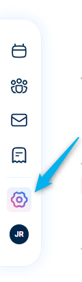
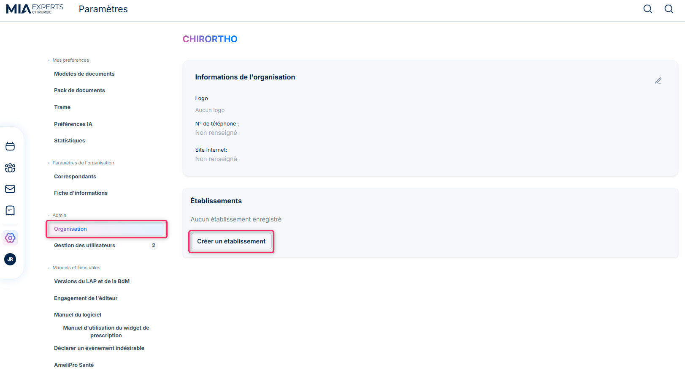
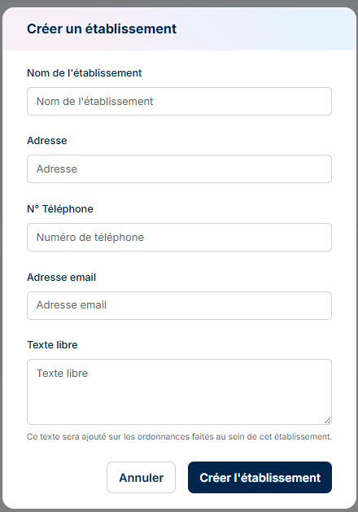
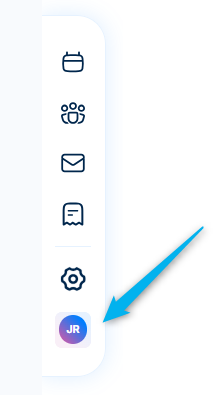
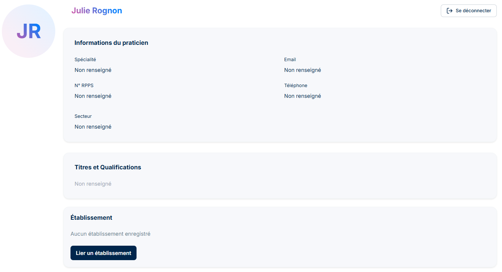

Démarrage rapide
Lors de la première utilisation de MIA Experts vous devrez renseigner les informations nécessaires au bon fonctionnement du logiciel.
Etape 1 : créer une organisation et un ou des établissement(s). Pour celà il faudra cliquer sur les paramètres dans la barre de menu sur la gauche

Puis sur Organisation, et enfin créer un établissement


Une fois les informations renseignées vous pouvez cliquer sur "Créer l'établissement". Il faudra recommencé l'opération autant de fois que vous avez d'établissements.
Pour accéder au profil utilisateur vous devez cliquer sur les initiales de la barre de manu sur la gauche

C'est sur cette page que vous pourez vous déconnecter.

Vous allez devoir compléter les différentes informations afin de vous assurer de les retrouver dans les divers endroits de l'application, ordonnances, courriers,